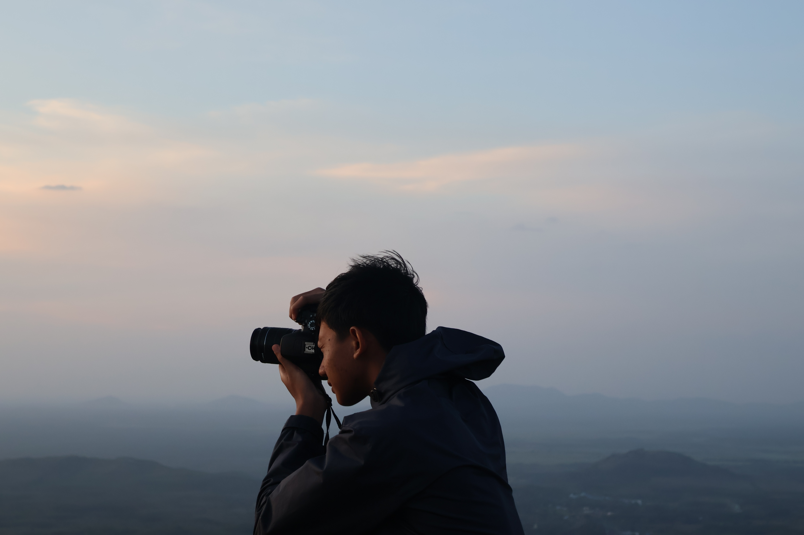
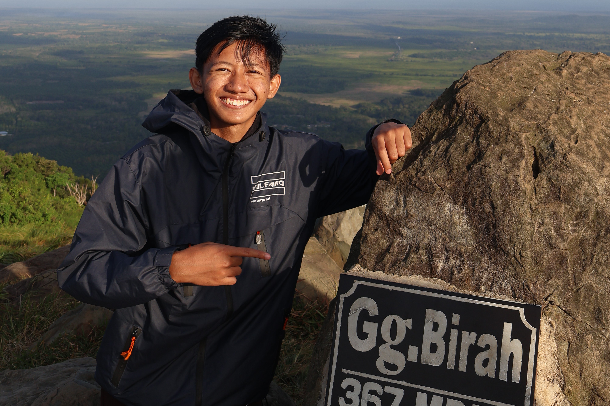
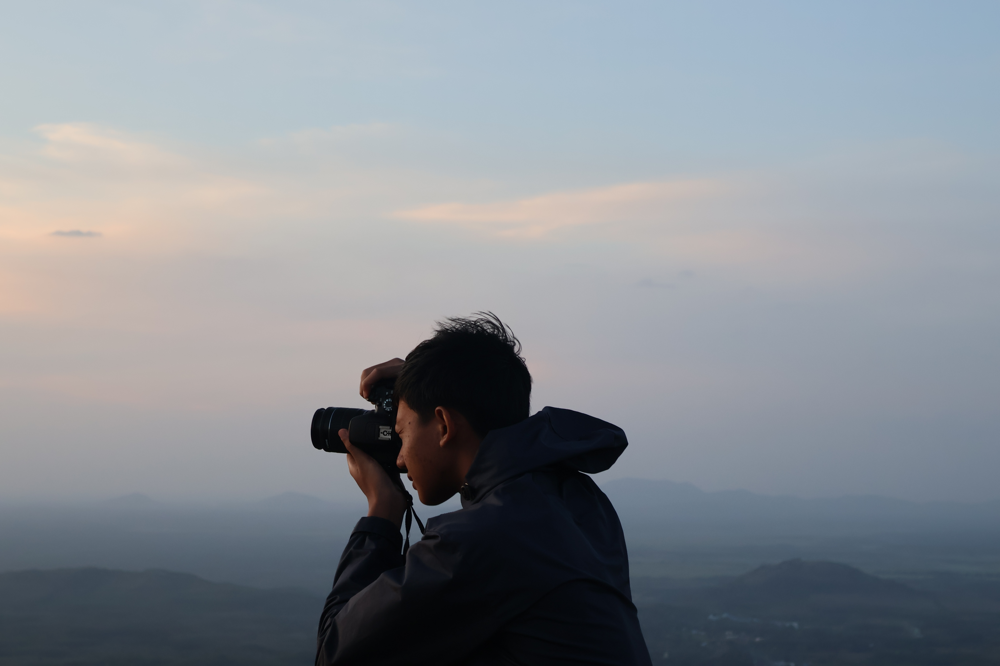
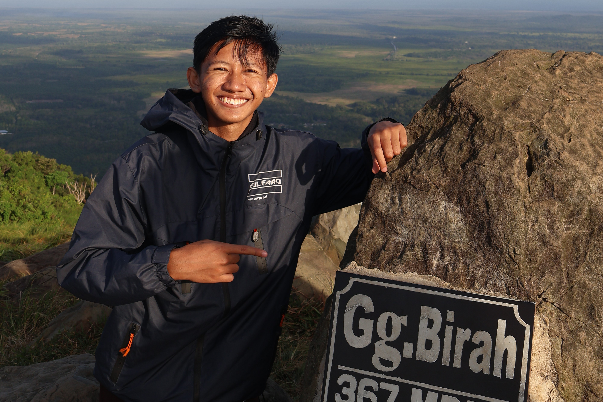

Anak pertama dari 4 bersaudara. Memiliki hobi futsal, Photography, hiking dan menggambar. Memulai pendidikan di Taman Kanak Kanak Budi mulia iii, pulau laut, Banjarmasin, Di tahun 2010. Azkaa pernah mengikuti lomba menggambar namun belum memberikan gelar juara bagi TK Budi mulia. Sekolah dasar di Madrasah ibtidaiyah TPI Keramat lalu pindah ke STP SD Khoiru Ummah 06 Banjarmasin pada semester 2 kelas 3. Di tahun 2014 Azkaa Muhammad Suta mulai tertarik dengan sepak bola. Lulus dari sekolah dasar di tahun 2018 dengan perolehan 4 juz Al-quran dan nilai rapot terbaik. Memasuki jenjang SMP Azkaa Muhammad Suta memilih melanjutkan pendidikan di SMPIT Hidayatul Quran Boarding school Banjarbaru (hqbs) sebagai angkatan pertama. Mulai tertarik dengan pramuka hingga berhasil memberikan gelar juara umum 1 jambore ranting Landasan Ulin 2020 bagi HQBS. Pernah mendaftarkan tim futsal untuk bermain di pertandingan tahunan ajaran baru Liga santri 2019 dan meraih juara 3 tingkat sekolah. Mengikuti seleksi tim B futsal HQBS dan lulus sebagai pemain bernomor punggung 17. Azkaa juga mulai mengarang novel bertema teknologi masa depan dan fantasi lalu mengupload novelnya di wattpad dengan judul Galaxyline (yaa walaupun stuck kehabisan niat dan ide). Selulusnya dari HQBS Azkaa Muhammad Suta melanjutkan pendidikan di MANPK MAN 4 Banjar. Di MANPK Azkaa pernah mengikuti lomba KTI online tingkat nasional berkelompok yang terdiri dari 3 orang, namun masih belum mendapatkan gelar juara. Azkaa juga pernah mengikuti lomba futsal sekalimantan 525 cup. Jabatan tertinggi dijenjang SMA yaitu terpilih sebagai wakil ketua Organisasi Santri Program Keagamaan (OSPK) MANPK MAN 4 Banjar, Martapura jilid 2. Selain itu juga pernah menjadi koordinator jamaah haul Abah Guru Sekumpul posko MAN 4 Banjar zona 2. Saat ini Azkaa menempuh pendidikan/berkuliah di Universitas Islam Kalimantan Muhammad Arsyad Al-banjari (UNISKA MAB)


 


